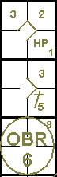

Infield fly manqué.
La définition des termes du règlement OBR stipule que lorsqu'un infield fly est annoncé, la
balle reste en jeu et tous les coureurs peuvent avancer à leurs risques et périls. Il peut donc arriver qu'un ou
plusieurs joueurs offensifs profitent d'une balle intérieure non attrapée pour avancer jusqu'à la base suivante.
Ces avances, généralement dues à une erreur défensive, sont notées par l'abréviation « e » (erreur de base
supplémentaire), suivie de la position du défenseur ayant manqué la prise facile, dans la case correspondant au
coureur de tête, c'est-à-dire celui qui a le plus profité de l'erreur.
Les autres coureurs avancent en fonction du numéro de l'ordre de passage au bâton du frappeur,
entre parenthèses.
Exemple 121:
Sans retrait et avec les première et deuxième bases occupées, l'arrêt-court rate un infield fly facile
frappé par le batteur numéro neuf, donnant aux deux coureurs l'occasion d'avancer d'une base.
L'arrivée en troisième base est annotée avec l'erreur de base supplémentaire du défenseur, tandis que
l'avancement en deuxième base est annoté avec le numéro de l'ordre de frappe (entre parenthèses) du frappeur.

|
action {
batter -> HP
}
action {
batter -> 1B5
,
runner1 ->
}
action {
batter -> OBR8-6
,
runner1 -> (1)
,
runner2 -> e6
}
|

|
Exemple 122:
Conditions et situation identiques à celles de l'exemple précédent.
La seule différence, c'est que l'arrêt-court rate la prise parce qu'il a été ébloui par le soleil
(ou les lumières artificielles), ou déstabilisé par le vent qui a modifié la trajectoire naturelle de la balle.
Étant donné que de tels phénomènes empêchent le defenseur de jouer à son meilleur niveau, les avancées des
deux coureurs sont enregistrées comme ayant eu lieu lors du coup sûr.

|
action {
batter -> HP
}
action {
batter -> 1B5
,
runner1 ->
}
action {
batter -> OBR8-6
,
runner1 -> +
,
runner2 -> +
}
|

|